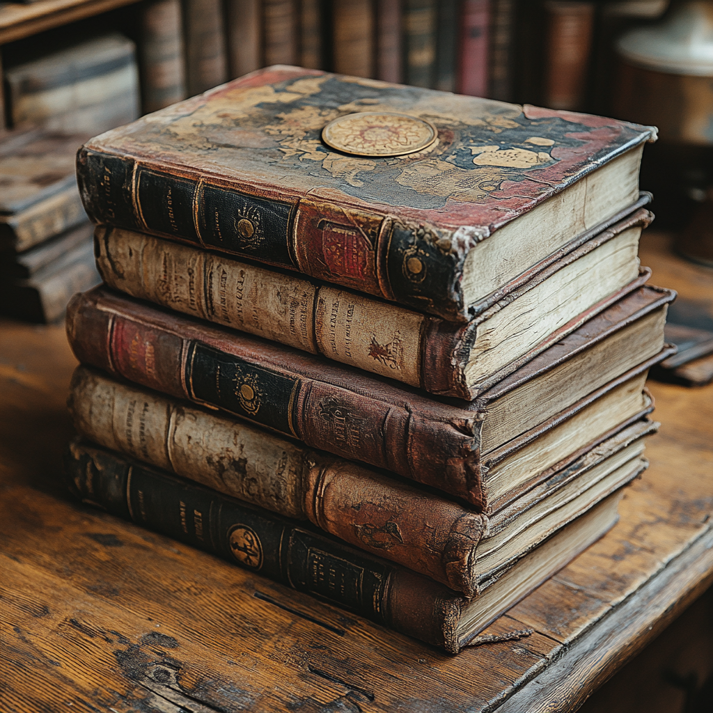
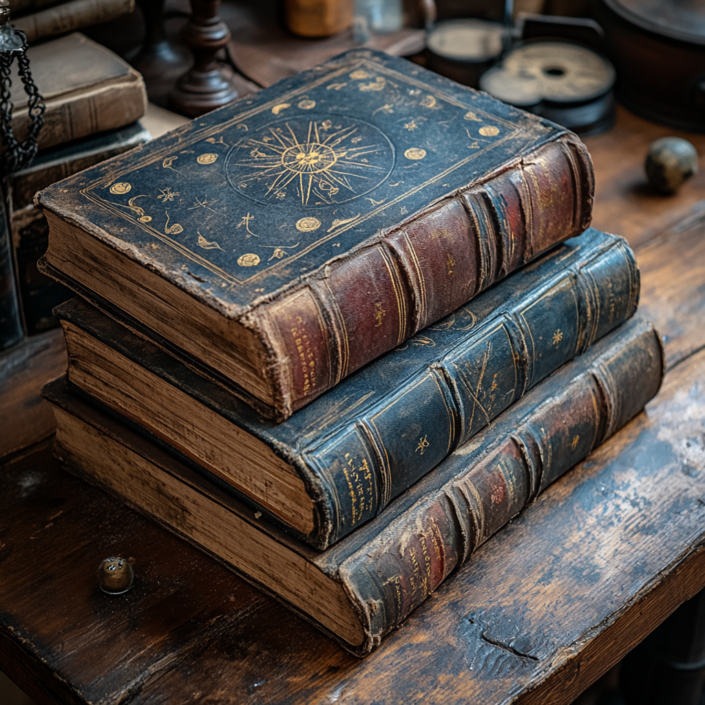
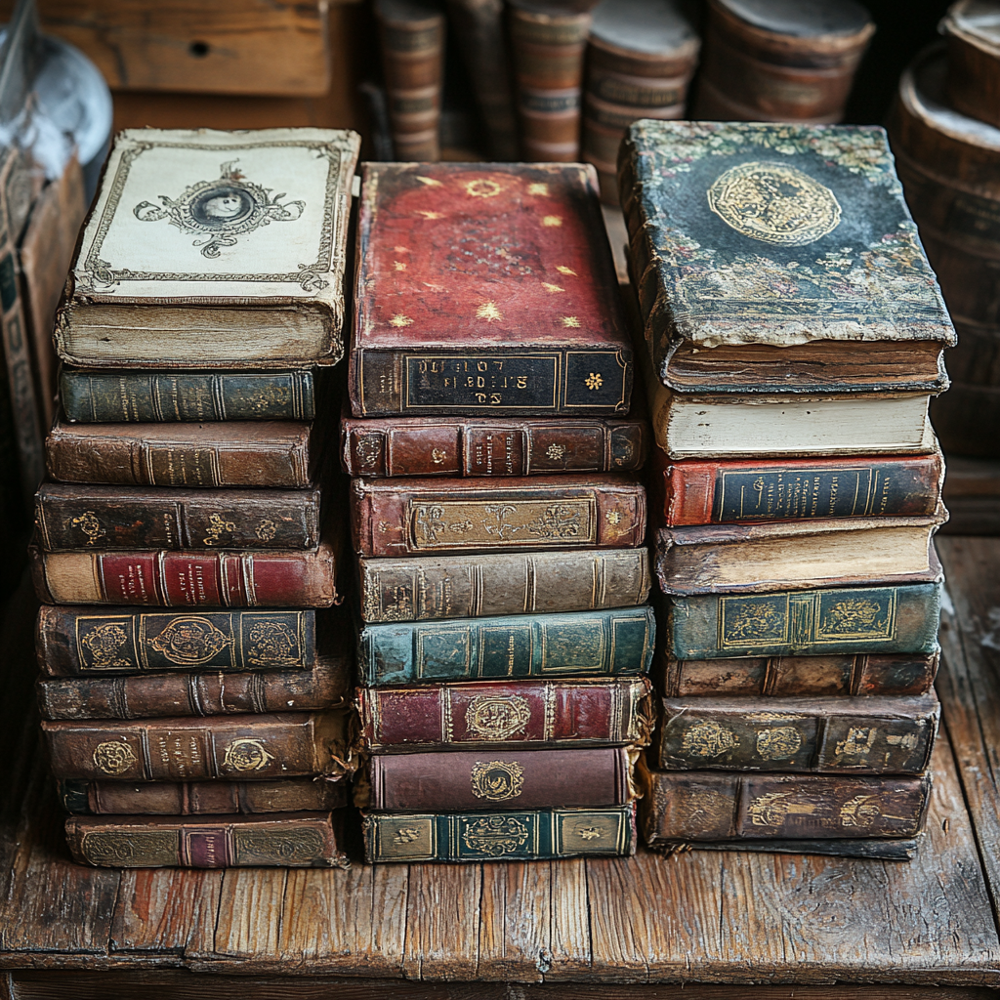

Einführung
Die Literatur des 18. Jahrhunderts war eine Zeit des Umbruchs und der Veränderung. Geprägt von der Aufklärung und der Romantik, entstanden in dieser Epoche Werke, die bis heute nachwirken. Besonders die neue Strömungen in der Romantik führten zu einer intensiven Auseinandersetzung mit Emotionen, der Natur und der individuellen Erfahrung.
Aufklärung und Romantik
Das 18. Jahrhundert war eine Zeit des Wandels. Auf der einen Seite stand die Aufklärung, die mit Vernunft und Rationalität an Fragen des Lebens heranging. Auf der anderen Seite entwickelte sich die Romantik, die Gefühl, Emotion und Imagination in den Vordergrund stellte. Diese beiden Strömungen prägten die Literatur dieser Epoche auf vielfältige Weise.
Während die Aufklärung oft rationale Erklärungen und gesellschaftliche Reformen forderte, entwickelten Autoren und Dichter der Romantik ein tiefes Interesse an der Natur und dem Übernatürlichen. Sie suchten nach einer Verbindung zum Göttlichen und erforschten die inneren Welten des Menschen.
 Wichtige Vertreter dieser Bewegung sind neben Goethe und Schiller auch Novalis und E.T.A. Hoffmann. Sie schufen Werke, die nicht nur die Schönheit der Natur feierten, sondern auch die Komplexität menschlicher Emotionen und die Faszination für das Unbekannte thematisierten.
Neue Strömungen in der Romantik
Die Romantik brachte neue Strömungen hervor, die sich von den rationalen Ansätzen der Aufklärung abgrenzten. Mystik, das Streben nach dem Unendlichen und die Idee des Genies wurden zentrale Themen. Autoren wie Novalis mit seinem Werk "Heinrich von Ofterdingen" und die Lyrik von Eichendorff reflektieren die Sehnsucht nach einer idealen Welt.
E.T.A. Hoffmann, bekannt für seine fantastischen Erzählungen, vermischte Realität und Fantasie und schuf eine Atmosphäre, die den Leser in die Tiefen der menschlichen Psyche eintauchen ließ. Seine Erzählungen sind geprägt von einem Gefühl des Staunens und der Melancholie, die die Leser bis heute fesseln.
Ein weiteres wichtiges Element der Romantik war die Rückbesinnung auf das Volkstümliche und die Folklore. Die Brüder Grimm sammelten und veröffentlichten Märchen, die nicht nur unterhalten, sondern auch kulturelle Identität und Traditionen bewahren sollten.
Einfluss auf die moderne Literatur
Die Literatur des 18. Jahrhunderts hatte einen nachhaltigen Einfluss auf die Entwicklung der modernen Literatur. Viele Themen und Motive, die damals aufkamen, finden sich auch heute noch in Büchern, Filmen und Serien wieder.
Fragen nach der Natur des Menschen, dem Verhältnis von Mensch und Maschine oder den Möglichkeiten technologischen Fortschritts beschäftigen Autoren bis in die Gegenwart. Auch Konzepte wie Utopien und Dystopien, die im 18. Jahrhundert entstanden, prägen weiterhin unser Verständnis von Literatur.
Zudem inspirierte die romantische Idee des Individuums und des persönlichen Erlebens viele moderne Schriftsteller und Künstler. Ihre Werke laden dazu ein, die eigene innere Welt zu erkunden und die Verbindung zur Natur neu zu entdecken. Die Themen der Romantik sind somit nicht nur historisch relevant, sondern auch in der zeitgenössischen Literatur nach wie vor von großer Bedeutung.
Somit erweist sich die Literatur des 18. Jahrhunderts als äußerst einflussreich und wegweisend. Ihre Themen und Ideen wirken bis heute nach und bereichern unser kulturelles Erbe.